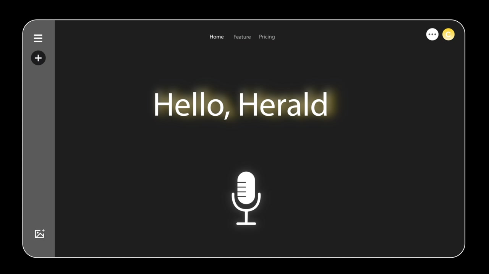
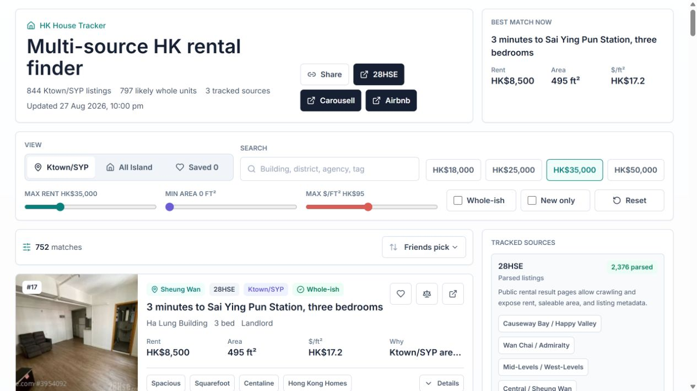
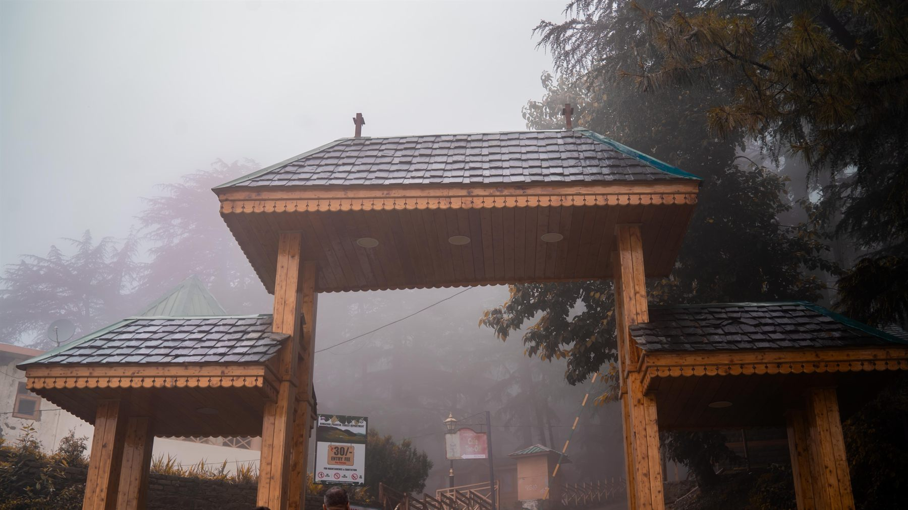
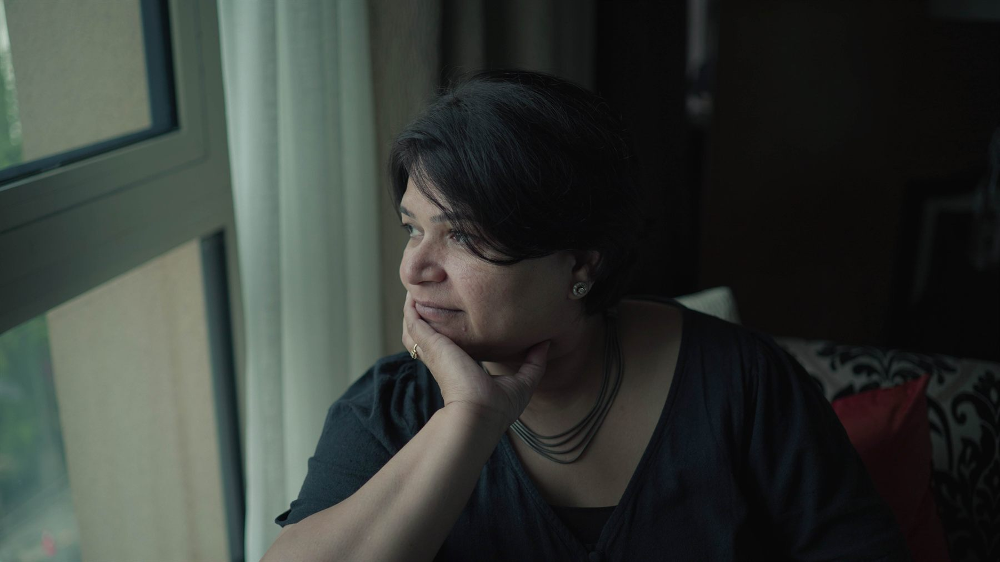
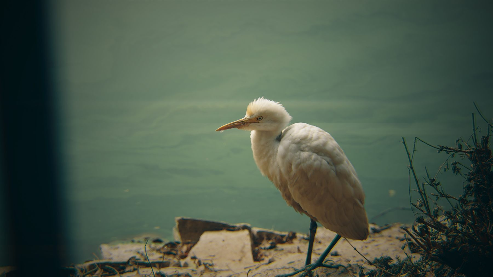

Aikagra
एकाग्र Hong Kong
A little about me
Hi, I’m Aikagra.Most people call me Kai. I study Computer Science at the University of Hong Kong, with a minor in Finance. I build AI tools, websites, and hardware prototypes. I also make photographs and films.
I like turning a question into something people can actually use, then finding a good way to tell its story.
View my résumé ↗ Experience
Jun 2026 — present
Novo AI Growth & Automations Intern
Production website, product demos, GTM agents, and RevOps workflows.
2026 — present
The University of Hong Kong Teaching Assistant & School Peer Adviser
First-year programming tutorials and student advising.
Dec 2025 — Jan 2026
Free Malaysia Today Editorial & Digital Intern
Publishing, SEO, newsroom IT, and three video stories with 100,000+ total views.
Products, websites & experiments
Selected work. Built from the first idea
heynovo.ai ↗
Novo AI Website · Product · Growth A production website for a health insurance intelligence platform, alongside product demos and growth automation.
Visit heynovo.ai ↗ My contribution I built: the marketing website, product demo system, GTM agents, RevOps dashboard, and technical SEO.
Tools: Next.js, TypeScript, Tailwind CSS, Framer Motion.
Context: Growth and Automations Intern, June 2026 to present.

▶ Watch the demo · 0:22
Herald AI · Safety Safety and compliance guidance for physical workers. Built around Hong Kong regulations and quick, direct answers.
Watch demo ↗ My contribution I built: the live prototype and regulatory information architecture, with work across product strategy, AI safety, market research, and GTM.
Recognition: HK$100,000 HKU Dean’s Innovation and Entrepreneurship Fund; the only Year 1 team selected.
Progress: three confirmed pilots.
View repository

Try the live product ↗
HK House Tracker Web · Data A Hong Kong Island rental finder that makes it easier to compare listings, budgets, and trade-offs.
Try it live ↗ My contribution Features: search, budget and size filters, saved listings, comparison, and source coverage.
Data: automated 28HSE snapshot refreshes every three hours.
Tools: Next.js, TypeScript, GitHub Actions, Vercel.
View repository
Document provenance Breadcrumb Original → Issued copies → Evidence
Explore the project ↗
Breadcrumb AI · Security A document provenance system that fingerprints recipient copies and compares leaked screenshots or PDFs against the evidence.
View repository ↗ My contribution I built: linguistic codewords, tracked links, extraction, deterministic scoring, and evidence reports with semantic review.
Tools: Python, Streamlit, SQLite, Gemma/Ollama, OCR.
Recognition: 3rd place at Build with Gemma, GDG Cloud HK.
Aikagra Studio ↗
Aikagra Studio Website · Photography A home for my photography and video work, with a 3D opening scene and a live Flickr archive.
Visit the studio ↗ My contribution I built: the Next.js portfolio, live Flickr integration, image optimization, and motion.
Photography, filmmaking, and the website live in the same project.
View repository
Hardware research Upright. Small wearable.
47g prototype208 survey participants3 iterations
Upright Hardware · Research An Arduino and Bluetooth posture wearable with a companion app, shaped by user research and three prototypes.
Project details My role: independent researcher and product builder.
Tools: Arduino, Bluetooth, Flutter, calibration, and haptic feedback.
Research: 208 participants; 76% reported poor posture and more than 90% recurring back pain.
Result: qualified for a Regeneron ISEF qualifier.
More things I’ve built
A different way to tell a story
Film & motion. Films, edits, and trailers.
Dreamcatcher Film · 1:11 Hello Claire Film · 0:28 ▶
Digex 2025 Trailer · 0:55
Explore the complete video archive 10 videos Loading the video archive…
Watch the complete video archive on Google Drive
Shanghai & Malaysia
A lot of looking. Night streets, coastlines,



See all 16 photographs Every frame is mine. Visit Aikagra Studio ↗
A few milestones
HK$100,000 HKU Dean’s Innovation &
3rd place Build with Gemma
SEA Hack Winner, Votee.ai &